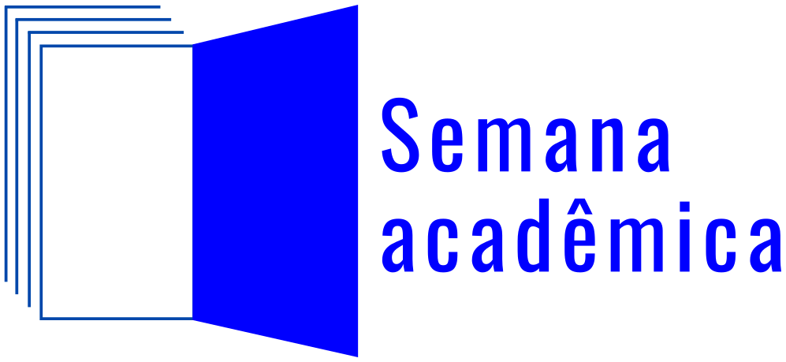
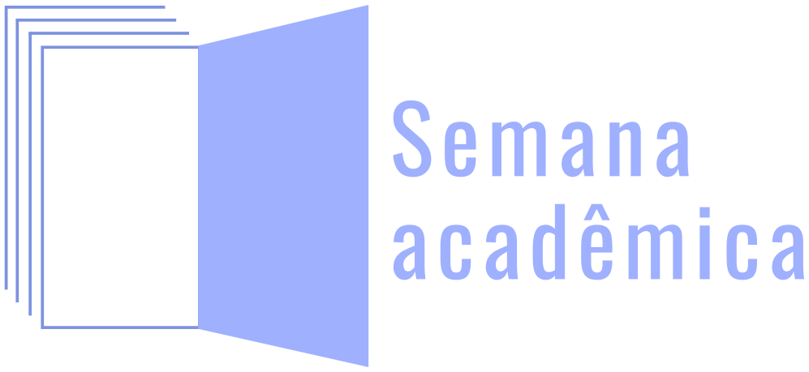

Guia das turmas
Gincana da Semana Acadêmica 2026 · 19 a 23 de outubro
⬇ Baixar em PDF Regulamento completo
A sua turma inteira é uma equipe só, e disputa com as outras nove ao longo da Semana Acadêmica. São 900 pontos em três atividades, e quem somar mais leva um certificado de melhor turma da Semana Acadêmica de 2026. Este guia cobre o que você precisa saber antes de segunda-feira. As regras completas estão no regulamento.
Como entrar
O endereço é gincanas.pirasnafisica.com.br. A turma tem um login só, e todo mundo usa o mesmo. Procure a sua turma na lista:
| Turma | |
|---|---|
| 1IM | 1im2026@gincana.com |
| 1IT | 1it2026@gincana.com |
| 1RT | 1rt2026@gincana.com |
| 2IM | 2im2026@gincana.com |
| 2IT | 2it2026@gincana.com |
| 2RM | 2rm2026@gincana.com |
| 3M | 3m2026@gincana.com |
| 3T | 3t2026@gincana.com |
| 4M | 4m2026@gincana.com |
| 4T | 4t2026@gincana.com |
A senha inicial de todas as turmas é 123456.
A gincana abre às 15h do dia 19, depois que as turmas dos dois turnos tiverem recebido a orientação. Antes desse horário não adianta entrar: as missões e os enigmas estão fechados no sistema, e a tela avisa que ainda não abriram. É assim que as dez turmas começam juntas.
Troquem a senha assim que entrarem pela primeira vez. Enquanto ela for 123456, qualquer pessoa que saiba o endereço da sua turma entra na conta de vocês. Escolham juntos uma senha que a turma inteira saiba e lembre, e combinem de ninguém mudar de novo depois, porque quem muda sozinho tranca os colegas para fora.
A troca é feita na página Perfil, depois de entrar. Se alguém trocar e a turma perder o acesso, ou se der qualquer outro problema para entrar, chamem o professor Lucas pelo WhatsApp ou por e-mail, nos contatos do fim deste guia, e ele redefine.
As três atividades
| Atividade | Quando | Pontos |
|---|---|---|
| Gincana de fotos | Os cinco dias | 350 |
| Trilha de enigmas | Os cinco dias, a qualquer hora | 300 |
| Quiz final | Dia 23, às 17h | 250 |
📸 Gincana de fotos
São 16 missões e 21 vagas de foto. Cada missão aparece cifrada: vocês decifram o texto por fora do site, descobrem o que fotografar, tiram a foto e enviam na vaga cujo número está ao lado da missão.
Várias missões só podem ser feitas no campus, e algumas delas só em certos momentos, porque dependem de uma atividade acontecendo ou de uma pessoa estar presente. Como toda foto precisa de pelo menos quatro integrantes da turma, combinem desde já quem fica de olho na programação e quem estará disponível em cada dia. É isso, e não a pressa do último dia, que decide quantas missões a turma consegue cumprir.
Três coisas custam pontos quando passam batidas. Toda foto precisa mostrar pelo menos quatro integrantes da turma junto do que foi pedido. A foto tem de ser feita durante a Semana Acadêmica, e não antes. E ela precisa entrar na vaga certa, porque foto na vaga errada é recusada.
Cada foto aceita vale 12 pontos, e os jurados podem somar até 3 pontos de criatividade. Foto recusada volta a liberar a vaga, com o motivo escrito, e pode ser refeita dentro do prazo.
🧩 Trilha de enigmas
Os enigmas formam uma corrente: a resposta de um abre o próximo, e a turma só enxerga aquele em que está. Cada um vale 20 pontos. Nenhum enigma fica trancado esperando uma data: a corrente inteira está disponível desde a abertura.
Alguns enigmas, porém, só se resolvem no campus. A resposta depende de uma informação que existe fisicamente aqui, como uma placa, um objeto ou uma medida feita no lugar, e que não está no enunciado nem se encontra na internet. Por isso não deixem a trilha para a noite de quinta: se a corrente parar num enigma desses, vocês vão precisar de alguém no campus, durante o horário em que ele está aberto.
Quase sempre a imagem aponta para alguma coisa fora dela: uma canção, um livro, um filme, uma pessoa, um lugar do campus. Quem indica o caminho são os detalhes pequenos, e eles estão ali de propósito. Alguns enigmas trazem uma dica, marcada com 💡.
Errar não tira ponto. Cada enigma aceita até 50 tentativas da turma, e é preciso esperar cinco segundos entre uma e outra. A resposta não precisa de acento, maiúscula nem pontuação.
🎯 Quiz final
No dia 23, às 17h, ao vivo, com perguntas sobre o que aconteceu durante a semana: as palestras, as oficinas, as atividades. Quem acompanhou responde melhor, e aí está a graça.
A turma joga em um aparelho só, entra pelo PIN mostrado no telão e usa o nome exato da turma como apelido. Os 250 pontos são divididos pelo número de questões, e cada acerto vale essa fração.
Os prazos
| Quando | O quê |
|---|---|
| 19/10 · 7h30 e 13h30 | Orientação às turmas, uma por turno |
| 19/10 · 15h | Abertura. Fotos e enigmas liberados juntos |
| 23/10 · 17h | Prazo final das fotos e dos enigmas |
| 23/10 · 17h | Quiz final |
| 23/10 · 18h | Encerramento e resultado |
Toda foto enviada até as 17h do dia 23 será avaliada, mesmo que chegue nos últimos minutos. Depois desse horário, foto enviada não é avaliada e resposta de enigma não pontua.
Ainda assim, deixar tudo para o fim é o maior risco da gincana, e não por causa da avaliação. É que foto recusada pode ser refeita, mas só dentro do prazo: quem envia às 16h50 e recebe uma recusa por faltar gente na foto não tem mais como corrigir. Soma-se a isso a internet do campus, que num dia de evento costuma ficar lenta justamente quando todo mundo precisa enviar ao mesmo tempo. Concluam o máximo de missões antes da quinta.
Como se organizar
A gincana é da turma inteira, e o desenho dela favorece quem participa junto. Toda foto exige quatro integrantes presentes, e os enigmas premiam a conversa: vários dependem de reconhecer uma canção, um filme, um lugar, e o que um não vê o outro vê. Deixar as fotos com um grupo e os enigmas com outro desperdiça as duas coisas.
O que convém combinar não é quem faz o quê, e sim quando a turma se encontra. Um horário fixo por dia, nem que seja o intervalo, resolve a maior parte das missões de foto e dá o momento para atacar o enigma em que a corrente parou.
Cabe perceber que o progresso é um só: qualquer integrante pode responder um enigma ou enviar uma foto, e todos avançam juntos. Vale alguém ficar de olho no placar e no que ainda falta, mas isso é acompanhar, não é cuidar sozinho de uma das atividades.
Sobre inteligência artificial
Nos enigmas e nas fotos, usar não é proibido. Em vários enigmas ela ajuda a organizar o raciocínio, reconhecer uma referência ou conferir uma hipótese que vocês já tiveram. O que ela não faz é entregar a resposta pronta, porque parte dos enigmas depende de coisa que existe fisicamente no campus, e parte depende de reconhecer algo que o texto não nomeia.
No quiz final, não. Ali qualquer forma de consulta, seja a uma inteligência artificial, à internet, a anotações ou a outra turma, elimina a equipe da competição. O quiz pergunta sobre o que aconteceu na semana e se responde com um aparelho só, à vista de todos, e é essa a razão de a regra ser diferente das outras duas atividades.
Dúvidas
Fale com o professor Lucas Telichevesky. Vale para senha trancada, foto que não sobe, dúvida de regra e qualquer coisa que o site fizer de estranho.
| Canal | Endereço |
|---|---|
| (51) 98131-2109 | |
| lucastelichevesky@ifsul.edu.br |
Mandem por escrito. No WhatsApp, escrevam a mensagem em vez de gravar áudio, e digam de que turma vocês são. Dúvida escrita fica registrada, pode ser respondida entre uma atividade e outra e evita que a mesma pergunta se perca.